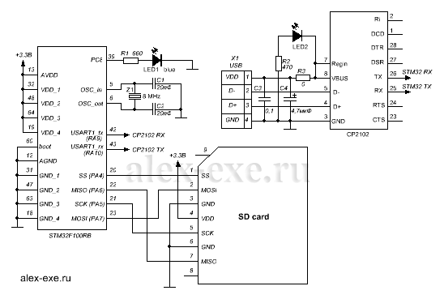

Если в проекте нужно выводить или получать большие объемы данных то на помощь придут различные flash микросхемы памяти. Если же нежно получать или выводить ОГРОМНЫЕ объемы данных, то стоит задуматься о более вместительном хранилище информации. На роль такого вместилища подходит SD карта памяти. Это – огромный носитель информации, по сравнению с обычными микросхемами памяти, объём которых редко превышает 64Мбита.
Подключение SD карты к STM32vlDiscovery
В статье рассмотрим подключение и диалог SD карты памяти с микроконтроллером STM32, через SPI. Без использование файловой системы.
В качестве контроллера и платы выступит демонстрационная плата STM32vlDiscovery с контроллером STM32F100RB на борту. Диалог с платой будет производиться по UART, точнее, через преобразователь USB-UART будем общаться через COM терминальную программу AL Terminal. Связь с картой памяти будет осуществляться через SPI.
Подключение карты памяти к STM32F100RB установленному в Discovery будет выглядеть следующим образом:

Схема
Контроллер установлен на демонстрационной плате и его подключение расписывать не буду. Преобразователь USB-UART описан в статье — USB-UART на cp2102 , можете применить и любой другой, например ft232 . Карта памяти подключается напрямую к микроконтроллеру, т.к. напряжение питание и логические уровни сигналов, в 3.3В, у них одинаковые.
Распиновка SD карты в SPI режиме
С подключением ничего сложного нет, переходим к коду.
Проект написан в Keil с использованием CMSIS и Standard Peripheral Library. Из SPL применены GPIO, RCC И USART библиотеки. Библиотеку для работы с картой памяти воспользовался готовой, взял с сайта «My Controller» — http://mycontroller.ru/category/vneshnie-ustroystva/karta-pamyati-sd/ .
Возможности библиотеки:
SD_init() – инициализация SPI и карты памяти
в случае удачи возвращает 0.
SD_sendCommand(cmd, arg) – посылка команды SD карте
Где: cmd – команда, arg – аргумент
Основные команды:
GO_IDLE_STATE 0 – программная перезагрузка
SEND_IF_COND 8 – для SDC V2 — проверка диапазона напряжений
READ_SINGLE_BLOCK 17 – чтение указанного блока данных
WRITE_SINGLE_BLOCK 24 – запись указанного блока данных
SD_SEND_OP_COND 41 – начало процесса инициализации
APP_CMD 55 – главная команда из ACMD команд
READ_OCR 58 – чтение регистра OCR
Команд для работы с картой памяти на самом деле гораздо больше, но в библиотеки задействованы только эти, чего для минимальной работы достаточно.
SD_ReadSector(BlockNumb,*buff) – прочитать сектор
в случае неудачи возвращает 0
Где: BlockNumb – адрес блока карты памяти, *buff – ссылка для буфера
SD_WriteSector(BlockNumb,*buff) – записать сектор
в случае неудачи возвращает 0
Где: BlockNumb – адрес блока карты памяти, *buff – ссылка для буфера
На основе библиотеки написал небольшую оболочку для ознакомления с картой памяти:
01.unsigned long address,i;
02.unsigned char c;
03.
04.init(); // инициализация переферии
05.if(SD_init()==0) // инициализация SD карты памяти
06.{
07.send_Uart_str(USART1,"init sd ok\n");
08.}
09.else
10.{
11.send_Uart_str(USART1,"init sd fail\n");
12.}
13.
14.send_Uart_str(USART1,"alex-exe.ru"); // выводим сообщение в UART
15.while(1)
16.{
17.send_Uart_str(USART1,"\n----------------------------\n");
18.send_Uart_str(USART1,"Read or write sd card r/w = ");
19.c=getch_Uart(USART1); // читаем байт с uart
20.while(getch_Uart(USART1)!=13){} // дожидаемся ввода enter с uart
21.send_Uart_str(USART1,"\nPress enter address = ");
22.buff_clear(); // очистка буфера
23.address=read_int_uart(USART1); // читаем число с uart, адрес сектора на sd карте
24.send_Uart_str(USART1,"\nAddress = ");
25.send_int_Uart(USART1,address); // выводим для проверки введенное число
26.send_Uart(USART1,'\n');
27.if(c=='w') // проверка на запись или чтение карты памяти
28.{
29.send_Uart_str(USART1,"Press enter data blok (max 512B), to exit press enter\n");
30.read_str_uart(USART1,Buff); // читаем строку с uart, окончание enter
31.i=0;
32.while((i < 512)&&(Buff[i]!=0))i++; // ищем конец текстовой строки
33.send_Uart_str(USART1,"Length text data = ");
34.send_int_Uart(USART1,i); // выводим длину текстового послания
35.send_Uart(USART1,'\n');
36.if(SD_WriteSector(address, Buff)==0) // запись буфера на SD карту
37.{
38.send_Uart_str(USART1,"write sd ok\n");
39.}
40.else
41.{
42.send_Uart_str(USART1,"write sd fail\n");
43.}
44.}
45.else
46.{
47.if(SD_ReadSector(address, Buff)==0) // чтения SD карты в буфер
48.{
49.send_Uart_str(USART1,"read sd ok\n");
50.}
51.else
52.{
53.send_Uart_str(USART1,"read sd fail\n");
54.}
55.for(i=0;i < 512;i++) // вывод содержимого буфера в терминал
56.{
57.send_Uart(USART1,Buff[i]);
58.}
59.}
60.// на последок мигнём светодиодом
61.GPIO_SetBits(GPIOC, GPIO_Pin_8); // включить синий светодиод на PC8
62.delay(1000000);
63.GPIO_ResetBits(GPIOC, GPIO_Pin_8); // выключить синий светодиод на PC8
64.}
В коде реализована возможность чтения и записи блоков карты памяти через терминал.
Эксперименты проводил с картами памяти SD Transcend 2 GB и SDHC Qumo 8GB.
В статье использовались материалы с сайта «My Controller» — http://mycontroller.ru/category/vneshnie-ustroystva/karta-pamyati-sd/.